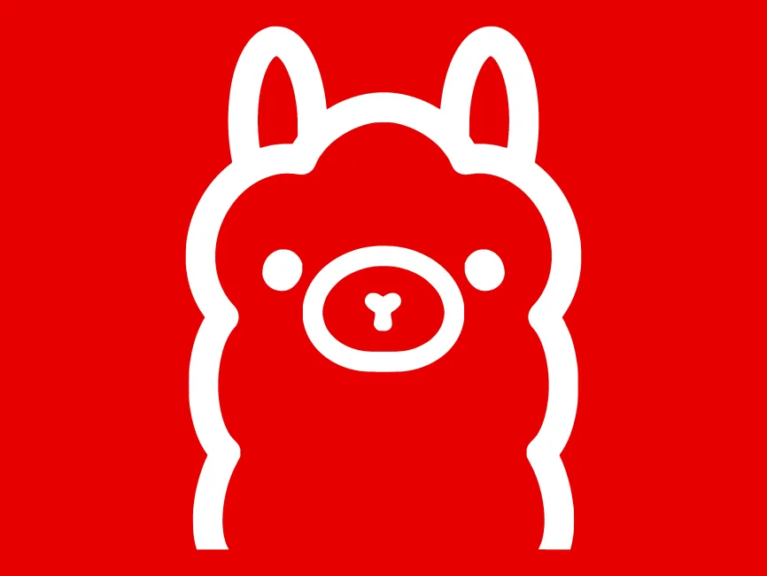
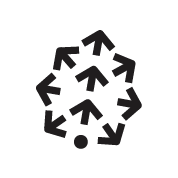
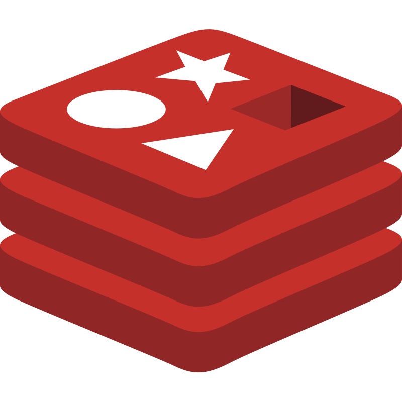
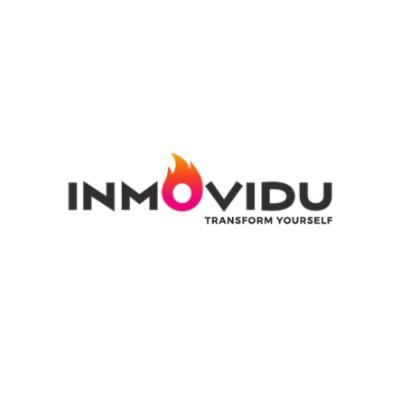

Data-driven brilliance
About
Data Should Drive Every Decision
With a Master's in Business Analytics from the University of Illinois at Urbana-Champaign, I specialize in transforming complex data into strategic business insights. My experience spans IoT agricultural analytics, healthcare AI systems, and enterprise automation solutions.
From developing COVID-19 detection systems serving 20 million users to implementing edge analytics for smart farming, I've consistently delivered data-driven solutions that create measurable impact across diverse industries.
Analytics That Empower and Inspire
At Qualcomm, I engineered automated testing platforms that drove 30% platform growth and $5% revenue increase. My expertise in machine learning, computer vision, and cloud computing enables me to build scalable solutions that solve real-world problems.
I've worked across healthcare, agriculture, telecommunications, and tech industries, bringing deep technical expertise in Python, AWS, TensorFlow, and advanced analytics to every challenge.
Built for Impact, Designed for Growth
Currently as a Software Engineer III at Walmart, I develop cutting-edge solutions that impact millions of customers daily. My work focuses on scalable system design, performance optimization, and data-driven decision making that drives business growth.
Beyond technical expertise, I'm passionate about continuous learning and staying at the forefront of AI/ML innovations. When not coding or analyzing data, I enjoy badminton and swimming, which keeps me energized and creative in my approach to problem-solving.
Technologies I've worked with
💻 Languages
🤖 Machine Learning & AI
🚀 Generative AI & LLMs

Ollama
Pinecone Milvus📈 Data & Analytics
☁️ Cloud & MLOps

Redis Elasticsearch🛠️ Development & Tools
Core expertise
AI in Action: Shaping the Future
I approach AI from a practical, tool-building perspective—focusing on creating real use cases that enhance daily workflows and transform SaaS experiences. I actively experiment with cutting-edge AI tools like LLMs, vector databases, and automation frameworks, integrating them into production systems. My philosophy centers on changing how we interact with AI, making it more intuitive and accessible. At Walmart, I've developed GenAI automation tools for task triaging and root cause analysis, while leveraging MCP servers and RAG systems to create intelligent decision-making platforms that revolutionize traditional business processes.
Machine Learning Engineering
I specialize in building end-to-end ML pipelines that solve real-world problems at scale. From developing COVID-19 detection systems serving 20 million users to implementing IoT analytics for smart farming, I create intelligent systems that drive measurable business outcomes through automated decision-making and pattern recognition.
Data Science & Analytics
My approach to data science goes beyond traditional analysis—I transform complex datasets into strategic business insights. With expertise in statistical modeling, predictive analytics, and visualization, I've consistently delivered solutions that drive 30% platform growth and millions in revenue across healthcare, agriculture, and tech industries.
Enterprise Software Development
As a Software Engineer III at Walmart, I build scalable systems that impact millions of customers daily. My experience spans from automating testing platforms at Qualcomm to developing cloud-based IoT solutions, always focusing on performance optimization, system reliability, and data-driven architecture design.
Projects
Real-time Drowsiness Detection
Computer vision system using Python and OpenCV for real-time drowsiness detection in drivers to prevent road accidents. Implements advanced facial landmark detection and eye aspect ratio monitoring.
Toxic Comment Classification
Machine learning model using logistic regression and SVMs to classify toxic comments and promote safer online communities. Implements natural language processing techniques for content moderation.
Machine Learning Optimization
Streamlining machine learning optimization processes with user-friendly web application for data-driven decision making. Features automated hyperparameter tuning and model performance analysis.
Airway Reservation System
Efficient runway reservations system optimizing airport operations through real-time monitoring and conflict management. Implements advanced scheduling algorithms and safety protocols.
Reinforcement Learning & Deep Q Learning
Exploration of RL techniques including policy iteration, value iteration, and Q-learning on diverse OpenAI environments. Advanced AI research with practical implementations.
Data-Driven Sales Analysis: Leveraging Power BI and DAX for Real-Time Retail Insights
This report provides real-time insights, using advanced data modeling and querying to highlight key retail trends and inform business decisions. A testament to the power of data-driven strategies in shaping the future of retail.
Experience
Master of Science in Business Analytics
University Of Illinois at Urbana-Champaign (2022-2023)
Coursework: Data Science and Analytics, Predictive Data Analytics, Business Intelligence, Computer Vision, Machine Learning in Finance, Big Data Infrastructure
Program DetailsBachelor of Technology in Computer Science and Engineering
Gokaraju Rangaraju Institute of Engineering and Technology
Coursework: Data Structures & Algorithms, Statistics and Probability, Discrete Mathematics, Cyber Security, Operating Systems, Web Systems, Compilers, Data Science, Computer Vision
Program DetailsExplore my 5+ years of experience across data science, AI/ML, and software engineering roles at leading companies like Walmart, Qualcomm, and University of Illinois. Click to see the interactive timeline with detailed achievements and technologies used.
📖 Published Research Papers
📊 Prediction and Forecasting of Sales Using Machine Learning Approach
Comprehensive research focusing on advanced machine learning techniques for sales prediction and forecasting optimization. Implements ensemble methods, time series analysis, and deep learning approaches to enhance prediction accuracy and business decision-making processes.
🏥 Analysis of Diabetes Mellitus for Early Prediction Using Optimal Features Selection through Machine Learning
Comprehensive study on diabetes prediction using feature selection techniques and machine learning algorithms. Explores various classification models including Random Forest, SVM, and Neural Networks to identify optimal predictors for early diabetes detection and prevention strategies.
🧠 Prediction of Alzheimer's Disease Using Machine Learning Methods
Advanced research on Alzheimer's disease prediction using cutting-edge machine learning methodologies. Investigates neuroimaging data analysis, cognitive assessment patterns, and biomarker identification to develop early detection systems for neurodegenerative diseases.
🎯 Accepted Conference Presentations
🤖 Emotion, Language, and Trust: Rethinking E-Commerce Support with Generative AI and Ethical Messaging
ICACECS-2025 - Accepted for presentation at the 6th International Conference on Advances in Computer Engineering and Communication Systems. This research explores the integration of generative AI in e-commerce customer support systems while maintaining ethical messaging standards and building consumer trust through transparent AI interactions.
🎯 Joint Optimization of Dynamic Pricing and Perishable Inventory Management via Multi-Agent Reinforcement Learning
Accepted for oral presentation (physical mode) at the 2nd International Conference on Artificial Intelligence & Machine Vision. This research presents a novel multi-agent reinforcement learning framework for optimizing dynamic pricing strategies while managing perishable inventory, addressing real-time market fluctuations and supply chain challenges.
Professional Journey
Software Engineer III
Walmart
Jan 2024 - Present
Key Responsibilities & Achievements
- Developed and deployed new technologies using ECL and Java with comprehensive unit testing frameworks
- Executed multiple test cycles simulating real-world production scenarios, ensuring 99.9% system reliability
- Collaborated with cross-functional teams including cloud and infrastructure specialists for efficient solution delivery
- Contributed to Azure Cosmos DB by developing automation runbooks, transforming manual tasks into self-service processes
- Built internal GenAI automation tools for task triaging and root cause analysis using MCP servers and vector databases
- Reduced operational costs by 40% through process automation and improved system efficiency
Technologies & Tools
Research Data Scientist
ISEE, University of Illinois
June 2022 - Dec 2023
Key Responsibilities & Achievements
- Implemented IoT-based solution using Raspberry Pi and PyCam in agricultural fields, reducing manual labor by 20%
- Leveraged edge analytics and AWS cloud system for real-time field monitoring, reducing data latency by 20%
- Deployed GPS modules for precise data collection with seamless timestamp integration
- Enhanced captured images using OpenCV, reducing data processing time by 30%
- Published research findings on precision agriculture and IoT applications
Technologies & Tools
Software Development Engineer
Qualcomm
Jan 2022 - July 2022
Key Responsibilities & Achievements
- Engineered automated testing platforms achieving 30% platform growth and $5% revenue increase
- Developed comprehensive test automation frameworks for mobile device validation
- Implemented advanced debugging tools for hardware-software integration testing
- Collaborated with hardware teams to optimize chipset performance and validation processes
- Contributed to CI/CD pipeline improvements reducing testing cycle time by 25%
Technologies & Tools
Deep Learning Engineer
INeuron.ai
May 2020 - Dec 2021
Key Responsibilities & Achievements
- Developed cutting-edge COVID-19 detection system serving 20 million users globally
- Implemented computer vision models for medical image analysis with 95% accuracy
- Built scalable deep learning pipelines for real-time healthcare applications
- Designed and deployed neural networks for automated disease detection systems
- Collaborated with medical professionals to validate AI-driven diagnostic tools
- Optimized model performance achieving 40% faster inference time
Technologies & Tools
Data Scientist
Grey Atom
May 2019 - Mar 2020
Key Responsibilities & Achievements
- Led machine learning projects for customer analytics and business intelligence solutions
- Developed predictive models for customer behavior analysis with 85% accuracy
- Implemented data visualization dashboards for executive decision-making
- Built automated ETL pipelines for large-scale data processing
- Mentored junior data scientists and conducted technical training sessions
- Delivered data-driven insights that improved business KPIs by 25%
Technologies & Tools

Data Scientist
Inmovidu Technologies
Feb 2019 - Apr 2019
Key Responsibilities & Achievements
- Managed database storage systems for large-scale data processing and integrity maintenance
- Created interactive visualizations using Tableau for comprehensive data analysis and insights
- Implemented machine learning models with optimized accuracy for data attribute analysis
- Developed data cleaning pipelines to ensure high-quality, consistent data
- Delivered actionable insights through advanced analytics and visualization techniques
Technologies & Tools
Select a position to view details
Click on any position in the timeline to see the responsibilities, achievements, and technologies used.
Let's connect
Ready to collaborate on something amazing?
I'm always excited to discuss new opportunities, innovative projects, and ways we can work together to solve complex problems with data-driven solutions.
rakeshreddyd56@gmail.com
linkedin.com/in/sai-rakesh-reddy-525954173
GitHub
github.com/rakeshreddyd56
Let's Talk
What led you here? What are you looking for? I would love to hear from you over a virtual coffee chat!